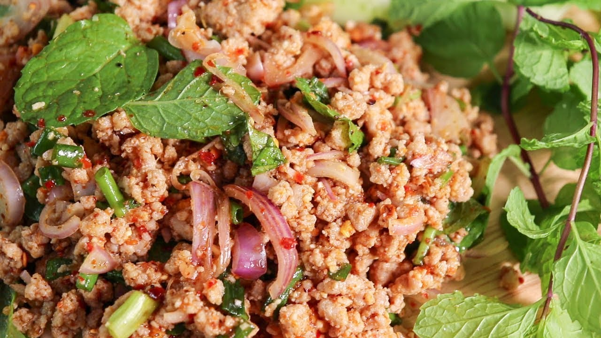

Somtum

Description
This dish is from Thailand, Also known as Thai Spicy pork salad
Ingredients (One serving)
- Minced pork 100 gram
- Sliced pork liver 50 gram
- Parsley (as you like)
- Finely chopped shallot 3 tbsp
- Fish sauce 2 tbsp
- Lime Juice 2 tbsp
- Sugar 1/2 tsp
- Chilli Flakes (as you like)
- Roasted rice 2 tbsp
- Thai mint (for garnishing)
Steps
- Boil your minced pork and your pork liver to just finished
- add your shallot parsley and all your seasoning in the pot
- keep mixing until finished
- Garnish with Thai mint
- Enjoy !!
Back to Main Page